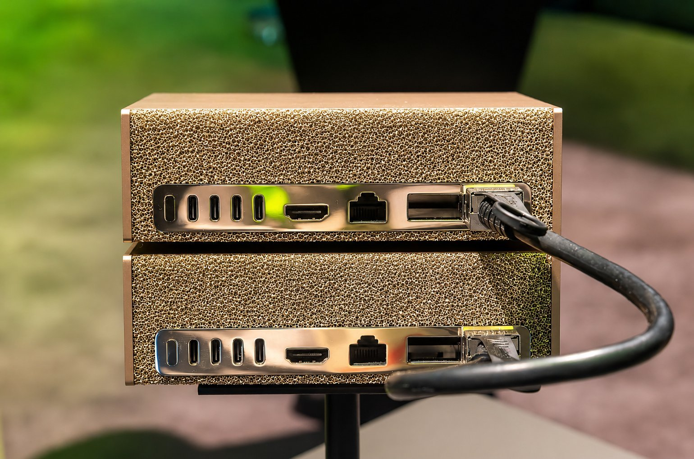
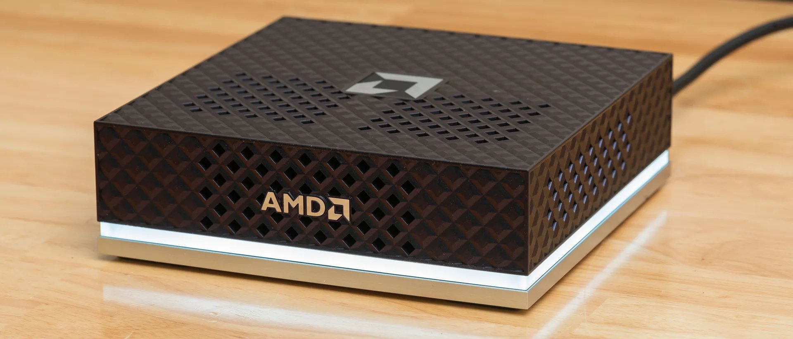

Z napravo DGX Spark imam neposredne izkušnje, s Strix Halo pa še ne. Primerjava združuje moje izkušnje, objavljene specifikacije in neodvisne preizkuse, med njimi neposredno primerjavo portala StorageReview.
Oprema
Obe napravi imata 128 GB skupnega pomnilnika in lahko lokalno poganjata velike, ustrezno kvantizirane modele. NVIDIA za DGX Spark navaja prepustnost pomnilnika 273 GB/s, do 1 PFLOP pri FP4 z redkostjo in podporo modelom do 200 milijard parametrov. Naprava uporablja Linuxov DGX OS in ima za povezovanje v gručo vgrajen omrežni vmesnik ConnectX-7.
AMD-jeva razvijalska platforma Ryzen AI Halo združuje 16-jedrni procesor Ryzen AI Max+ 395 z 32 nitmi, grafiko Radeon 8060S, enoto XDNA 2 NPU, 128 GB pomnilnika in prepustnost 256 GB/s. Podpira Windows 11 ali Linux, zato je uporabna tudi kot splošen osebni računalnik.
Kaj kažejo preizkusi
Pri večini preizkusov vLLM z več sočasnimi zahtevami je StorageReview izmeril prednost naprave Spark, pogosto približno 2–4-kratno. Razlika se je močno spreminjala glede na model, kvantizacijo, dolžino poziva in velikost serije; pri nekaterih preizkusih ustvarjanja odgovorov sta bili napravi precej bližje. Halo se je dobro odrezal pri procesorskih nalogah in omogoča uporabo sistema Windows. Če boste uporabljali določen model kot posameznik, poiščite preizkus, ki ustreza vašemu načinu dela.
Zakaj je omrežni priključek pomemben
Vgrajeni ConnectX-7 omogoča smiselno povezavo dveh naprav Spark, kadar model potrebuje več pomnilnika. NVIDIA navaja dva priključka QSFP na vsaki napravi, vsak z omejitvijo 200 Gb/s in podporo za Ethernet. Zmogljivosti samostojnih kartic ConnectX-7 niso enake omejitvam priključkov v napravi Spark. Za gručo potrebujete tudi ustrezen kabel, programsko opremo in nastavitve modela; povezava dveh naprav sama po sebi ne podvoji hitrosti posamezne zahteve.

Kaj bi izbral?
DGX Spark bi izbral za razvoj lokalne AI, orodja CUDA in PyTorch, strežbo modelov z večjo prepustnostjo ali poznejšo povezavo dveh naprav. To je moja izbira za namensko delovno postajo za AI.
Strix Halo je primernejši, če želite prilagodljiv računalnik z Windows ali Linuxom, ki poleg velikih lokalnih modelov služi vsakdanjemu delu in igranju iger. Platforma x86 je lahko boljša izbira, kadar mora ena naprava opravljati več različnih nalog.

Sklep
Za namensko lokalno delo z AI dajem prednost ekosistemu in možnosti povezovanja naprave DGX Spark. Če želite vsestranski vsakdanji računalnik, ki lahko poganja tudi velike modele, je Strix Halo privlačna izbira. Odločite se glede na delo, ki ga boste dejansko opravljali.
Viri: NVIDIA: oprema, NVIDIA: povezovanje, AMD: specifikacije in StorageReview: preizkusi.